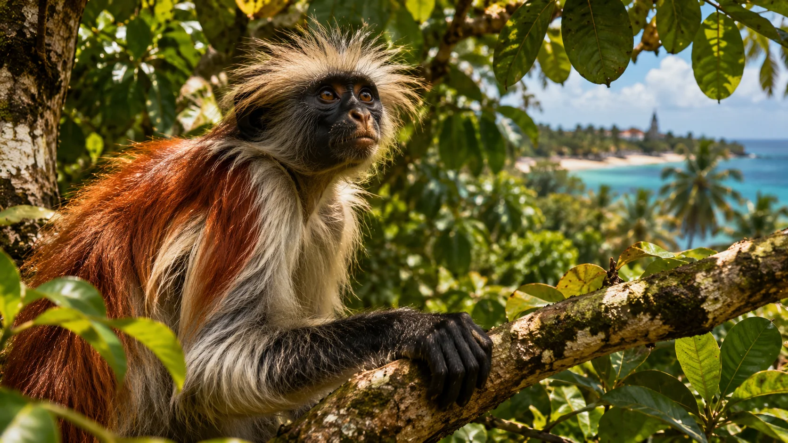
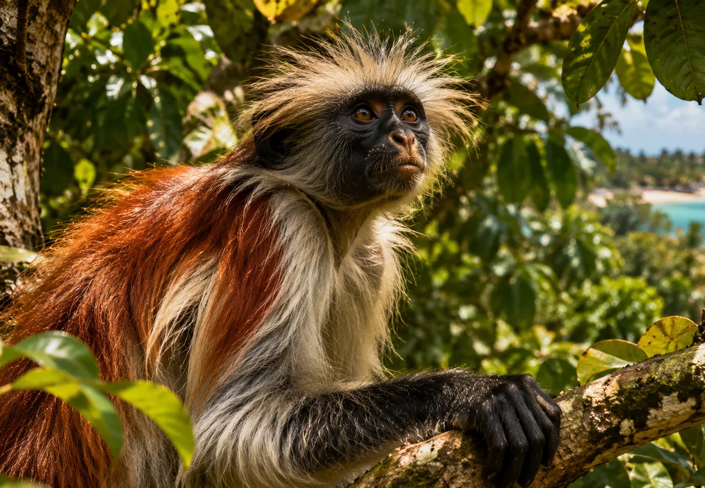

ВИЗУАЛЬНЫЙ ПУТЕВОДИТЕЛЬОстров не заканчивается
Остров не заканчивается
на линии фронта.
Этот раздел добавлен для атмосферы: тропический лес, побережье и животный мир островной Восточной Африки. Он не изменяет сюжет и не добавляет новые официальные факты в авторский лор.

Тропический лес
Укрытые листвой тропы, шум птиц и густые заросли дают пространство для экспедиций, поисков пропавших людей и мирных RP-сцен.
Морское побережье
Лагуны, приливы, рыбачьи лодки и коралловые отмели напоминают, что повседневная жизнь островитян зависит от моря.
Дикая природа
Животные и природные зоны используются здесь как визуальная атмосфера, а не как утверждённый список существ на игровом сервере.


ФОТОРЕФЕРЕНСЫ ЖИВОТНОГО МИРА
Море и лес.


Настоящие фотографии загружаются при подключении к интернету. Без сети сайт показывает локальные иллюстрации.
Реальный вид, художественный кадр. Для референсов красного колобуса и природной среды можно использовать Wikimedia Commons, например публичную страницу фото Fanny Schertzer. Изображение на нашем сайте создано отдельно и не является документальной фотографией.